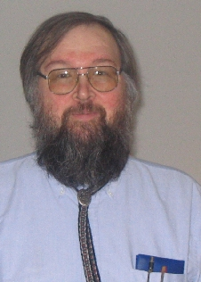

Professor Gerald Q. "Chip" Maguire Jr.
Prof. Gerald Q. Maguire Jr.
Kungliga Tekniska högskolan (KTH)/ KTH Royal Institute of Technology
Skolan för elektroteknik och datavetenskap/School of Electrical Engineering and Computer Science (EECS)
Institution för Datavetenskap/Department of Computer Science (CS)
Avdelningen för programvaruteknik och datorsystem/Division of Software and Computer Systems (SCS)
Electrum 229
SE-164 40 Kista
Sweden
visitaddress:
Wireless@kth,
Isafjordsgatan 22 (Kistagången 16), Electrum Building, "B" Elevator, 4th floor, room 4478
(PNG, JPEG, PDF)
maguire@kth.se (e-mail is the best way to reach me)
[note that encoded mail, HTML, spam, ... will simply be deleted]
If you are visiting the KTH Kista campus, there is a service
center at Kistagången 16, elevator A, level 3, open during normal
business hours (with an early closing on Friday).
EECS service center(s): parcels and courier deliveries to KTH Kista
To get to my office or lab, remember that when you come out of the
"B" elevator at the 4th floor of the Electrum building you must turn
right, then you will have to wait for me to let you in. (If
you turn left, you will end up at a different department.)
My lab is at approximately 59°24'18.69''N, 17°57'0.83''E.
area: Computer Communication (Datorkommunikation)
Formally the chair is described
in the following Swedish: Ämnet omfattar
integrerade dator- och kommunikationssystem för personlig
databehandling och personalkomunikation, speciellt trådlös
kommunikation och effektiva implementerings strategier. (Ref. nr
473/93). (This translates to "The area concerns integrated
computer- and communication systems for personal data processing and
personal communications, especially wireless communications and
effective implementation strategies.")
Short Vita
long Vita (A4 sized, PDF)
Very brief description: A tool maker - in the sense of Frederick P. Brooks, Jr.
As of 2021-01-01 I am member of Avdelningen för programvaruteknik och
datorsystem (SCS)/Division of Software and Computer
Systems (SCS) within Institution för
Datavetenskap/Department of Computer Science (CS) in Skolan för elektroteknik och datavetenskap/School of Electrical Engineering and Computer Science (EECS).
Through and including 2019-12-31, I was a member of
the Institution för Kommunikation/Department of
Communications (COM), after this I am part of Institution för Datavetenskap/Department of Computer Science (CS).
From 1 January 2018, KTH has merged three schools (CSC, EES, and ICT),
to form the School of Electrical Engineering and Computer Science (EECS)
or in Swedish: Skolan för elektroteknik och
datavetenskap. The external web site is: https://www.kth.se/eecs and
the internal web site is https://intra.kth.se/eecs.
From 1 January 2005, KTH is reorganized into 9
schools. Organizationally, I was in the Skolan för
informations- och kommunikationsteknologi/School of Information
and Communication Technology (ICT), in the
Department of Communication Systems (CoS).
From 1 Jan. 2001 to Dec. 31, 2005, I was part of the Institutionen
för Mikroelektronik och Informationsteknik (IMIT) in the
departmental organization I was part
of the Laboratory for Communication Networks (Avdelningen för
kommunikationsätt) (LCN). At KTH prior to this, I was part of the
Department of Teleinformatics (Teleinformatik).
- Current course(s)
- Chip's
Sandbox in Canvas at KTH: Some of the things that I have
been working with in using the Canvas LMS. This is primarily for
use by other faculty at KTH and secondarily for teachers elsewhere.
- IK1552
Internetworking (Period 4, Spring 2022)
IK1552 course in canvas
- II2210 Ethics and Sustainable Development for Engineers
(II2210 Etik och hållbar utveckling för ingenjörer
- Exjobs
-
Civilingenjörexamensarbete, Magisterexamensarbete,
and Masters thesis projects (aka Exjobbs)
Canvas course room for: Degree Projects at EECS, 2021
As of 1 January 2020: I am an examiner for theses in the following
courses (note that the course codes and program information come
from
https://intra.kth.se/en/eecs/utbildningsprogram/kursplanering/kurskoder-for-examensarbetskurser-1.945587):
- IA250X
Examensarbete inom informationsteknik, avancerad niva/
Degree Project in Information and Communication Technology, Second Cycle 30 hp
(for CINTE students) - in Canvas
- DA246X
Examensarbete inom datalogi och datateknik med inriktning mot kommunikationssystem, avancerad nivå/
Degree Project in Computer Science and Engineering, specialising in
Communication Systems, Second Cycle 30 hp
(for TCOMM students) - in Canvas
- EA246X
Examensarbete inom elektroteknik med inriktning mot kommunikationssystem, avancerad nivå/
Degree Project in Electrical Engineering, specialising in Communication Systems,
Second Cycle 30 hp (for TCOMM students) - in Canvas
- DA256X
Examensarbete inom datalogi och datateknik med inriktning mot ICT innovation, avancerad nivå/
Degree Project in Computer Science and Engineering, specialising in ICT Innovation, Second
Cycle 30 hp (graded A-F) (for TIVNM students) - in Canvas
- DA258X
Examensarbete inom datalogi och datateknik med inriktning mot ICT innovation, avancerad nivå/
Degree Project in Computer Science and Engineering, specialising in ICT Innovation, Second
Cycle 30 hp (graded P/F) (for TIVNM students) - in Canvas
- EA256X
Examensarbete inom elektroteknik med inriktning mot ICT innovation, avancerad nivå
Degree Project in Electrical
Engineering, specialising in ICT Innovation, Second
Cycle 30 hp (graded P/F) (for TIVNM students) - in Canvas
- EA258X
Examensarbete inom elektroteknik med inriktning mot ICT innovation, avancerad nivå/
Degree Project in Electrical
Engineering, specialising in ICT Innovation, Second
Cycle 30 hp (graded A-F) (for TIVNM students) - in Canvas
- DA240X
Examensarbete inom datalogi och datateknik med inriktning mot programvaruteknik för distribuerade system, avancerad nivå/
Degree Project in Computer Science and
Engineering, specialising in Software Engineering for
Distributed Systems, Second Cycle 30 hp (for TSEDM students) - in Canvas
Prior to 1 January 2020, I was an examiner for theses in two areas and for 3
degrees at the advanced level (D-nivå):
Canvas course
for 2nd cycle degree project
- Elektronik- och datorsystem (Embedded Electronic- and
Computer Systems):
- IL222X Examensarbete inom elektronik och datorsystem, avancerad nivå, 30 hp
- IS250X Examensarbete inom elektronik och datorsystem, avancerad nivå, 30 hp
- IS252X Examensarbete inom elektronik och datorsystem, avancerad nivå, 15 hp
- Kommunikationssystem (Communication Systems):
- IK223X
Examensarbete inom kommunikationssystem, avancerad nivå, 30 hp
- IK251X Examensarbete inom kommunikationssystem,
avancerad nivå, 30 hp (formerly)
- IK253X Examensarbete inom kommunikationssystem, avancerad nivå, 15 hp
- formerly 1F1521 Examensarbete inom Datorkommunikation (note that this course is Pass/Fail)
Further info: list of
events and
ICT's calendar.
See also Dejan
Kostić's Master's thesis checklist
- According to the ICT dean's decision (I-2014-0918) there
will be a new set of course codes for the degree projects
of Second level (Avancerad nivå) students at ICT (see also the information
about these at
https://www.kth.se/en/student/program/examensarbete/ict-degree-project-1.201591
- I am an examiner of degree projects courses in the following majors/field of technology:
- Electrical Engineering (major, MSc)
- Computer Science and Engineering (major, MSc)
This includes the following courses:
| Target audience | Degree
program(s) | Subject area | Course
name | Credits | Course code for A-F grading scale | Course code for Pass/fail grading scale |
|---|
| Civil Engineering (Civilingenjör)
students | CINTE, CDATE | Computer Science and Computer
Engineering
Datalogi och datateknik | Degree Project in Information Technology, Second Cycle
Examensarbete inom informations- och kommunikationsteknik, avancerad nivå | 30 |
II225X |
II245X |
| CINTE, (CDATE) | Electrical Engineering
Elektroteknik | Degree Project in Information Technology, Second Cycle
Examensarbete inom informations- och kommunikationsteknik, avancerad nivå | 30 |
IL228X |
IL248X |
| For students in the ICT School's Master's programs | TSEDM, TDISM, TIVNM
(TEBSM) | Computer Science and Computer Engineering
Datalogi och datateknik | Degree Project in Computer Science and Computer Engineering, Second Level
Examensarbete inom datalogi och datateknik, avancerad nivå | 30 |
II226X |
II246X |
| TCOMM, TIVNM, TEBSM | Electrical Engineering
Elektroteknik | Degree Project in Electrical Engineering, Second Cycle
Examensarbete inom elektroteknik, avancerad nivå | 30 |
IL226X |
IL246X |
| For Second Cycle thesis project students at ICT outside of any programs | Master's | Computer Science and Computer Engineering
Datalogi och datateknik | Degree Project in Computer Science and Computer Engineering, Second Level
Examensarbete inom datalogi och datateknik, avancerad nivå | 30 |
II227X |
II247X |
Electrical Engineering
Elektroteknik | Degree Project in Electrical Engineering, Second Cycle
Examensarbete inom elektroteknik, avancerad nivå | 30 |
IL227X |
IL247X |
| Magister | Computer Science and Computer Engineering
Datalogi och datateknik | Degree Project in Computer Science and Computer Engineering, Second Level
Examensarbete inom datalogi och datateknik, avancerad nivå | 15 | |
II249X |
Electrical Engineering
Elektroteknik | Degree Project in Electrical Engineering, Second Cycle
Examensarbete inom elektroteknik, avancerad nivå | 15 | |
IL249X |
- For students in the 270 credit engineering program, adopted under the
1993 admission regulations, registration continues using the current
course codes (see the courses IK223X, IL222X, IS250X, and IS252X).
-
Högskoleingenjörexamensarbete/Kandidate
thesis projects (aka Exjobbs) (see also
Information om examensarbetet för Kandidatexamen
och Högskolingenjörsexamen (15 hp)
Canvas course
for 1st cycle degree project
As of 1 Jan. 2020: I am an examiner for theses in the
following courses:
- IA150X
Examensarbete inom informationsteknik, grundnivå/
Degree Project in Information and
Communication Technology, First Cycle 15 hp
(for CINTE students) - in Canvas:
- VT20, HT21/VT22
- II142X
Examensarbete inom datateknik, grundnivå/
Degree Project in Computer Engineering, First Cycle
15 hp (for TIDAB students) - in Canvas
- IL142X
Examensarbete inom elektronik och datorteknik, grundnivå/
Degree Project in Electronics and
Computer Engineering, First Cycle 15 hp
(for TIEDB students) - in Canvas
- II143X
Examensarbete inom informations- och kommunikationsteknik, grundnivå/
Degree Project in Information and
Communication Technology, First Cycle 15 hp
(for TCOMK students) - in Canvas - VT20,
HT21/VT22
prior to 1 Jan. 2020: I am an examiner for theses in two areas and for 2
degrees at the basic level (C-nivå):
- Elektronik- och datorsystem (Embedded Electronic- and Computer Systems):
- IL120X Examensarbete inom elektronik och datorsystem, grundnivå, 15 hp
- IS150X Examensarbete inom elektronik och datorsystem, grundnivå, 15 hp
- Kommunikationssystem (Communication Systems):
- IK1201 Examensarbete inom kommunikationssystem, grundnivå, 15 hp
- IK150X Examensarbete inom kommunikationssystem, grundnivå, 15 hp
Degree Project in Communications Systems, First Level 15.0 credits
formerly Examensarbete inom Datorkommunikation (or 6B2090 Examensarbete inom datornätverk))
- IK120X Examensarbete inom teknik och management, grundnivå, 15 hp
Degree Project in Engineering and Management, First Level 15.0 credits
- IK121X Degree Project in Communication Systems, First Level 15hp
I am an examiner of degree projects courses in the following majors/field of Technology:
- Information and Communication Technology
- Computer Engineering
- Electronics and Computer Engineering
This includes the following courses:
| Target audience | Degree
program(s) | Subject area | Course
name | Credits | Course code for A-F grading scale | Course code for Pass/fail grading scale |
|---|
| Bachelor of Science in Engineering
(Högskoleingenjör) students | TIDAB,
TIDAA | Technology/
Teknik | Degree Project in Computer Engineering, First Cycle/
Examensarbete inom datateknik, grundnivå | 15 |
II122X |
II142X |
| TIEDB, TIELA | Degree Project in Electronics and Computer Engineering, First Cycle/
Examensarbete inom elektronik och datorteknik, grundnivå | 15 |
IL122X |
IL142X |
| Bachelor of Science (kandidate) students | CINTE, TCOMK | Degree Project in Information and Communication Technology, First Cycle/
Examensarbete inom informations- och kommunikationsteknik, grundnivå | 15 |
II123X |
II143X |
Further info: list of events and
ICT's calendar.
- Projects - IK2553 Project in Computer Communication 15.0 hp (formerly 1F1421 Project in Computer Communication)
(Projekt i datorkommunikation) (10 points)
For an example of a final project report see
here.
- Upcoming course(s)
- II2202 Research Methodology and Scientific Writing
(II2202 Forskningsmetodik och vetenskapligt
skrivande
- Recent course(s):
I have had a number of projects in
cooperation with researchers at Karolinska.
Earlier I was responsible for the
Computer Communication
Systems Lab (CCSlab). In the CCSlab information you can find out
about my graduate students, research projects, papers, etc. from this
earlier time.
For information about the iPAQ.
For miscellaneous notes regarding various
VIA Technology computers. (Both collections of information are
purely to help others utilize these devices, as others have helped me
by making their notes and experiences available.)
For information about version 1 and
version
3 of the SmartBadge and how to program it.
Remote rebooting a version 3 badge via an Axis Communication NetEye -
photos. The SmartBadge was done in
cooperation with Prof. Mark T. Smith.
For information about version 4.
Please note that:
- I do not have any positions for
students seeking to do summer projects during the period May-July.
- I do not anticipate having any positions for
students seeking to do summer internships.
- I do not expect to take on any doctoral students within
KTH. I am only interested in industrial doctoral students (industridoktorander).
Service activities
-
A per the protocol of the Faculty Council ("Fakultetsrådet") meeting of 2015-03-17, I am a member of the
KTH reference group on language issues:
"Ledamöter i KTH:s referensgrupp för språkfrågor
Dnr V-2015-0246
Handlingar i ärendet har sänts ut.
Från och med 2013 har skolan för teknikvetenskaplig
kommunikation och lärande (ECE) ansvar för
språkfrågor vid KTH. Till ECE-skolans uppdrag kring
språkpolicyn och övriga språkfrågor finns en
referensgrupp bestående av ordförande, fyra
lärarrepresentanter, en studeranderepresentant för
studerande på grund- och avancerad nivå och en
studeranderepresentant för studerande på
forskarnivå. Fakultetsrådet utser
lärarrepresentanterna.
Lärarrepresentanternas mandatperiod i KTH:s referensgrupp
för språkfrågor för perioden går ut
2015-03-31. Förslag på nya ledamöter i referensgruppen
har inkommit.
Per Berglund redogör för ärendet.
Fakultetsrådet beslutar att utse Michael Hanke (SCI), Gerald Q
Maguire (ICT), Ida Pinho (ECE) och Peta Sjölander (STH) som
ledamöter i KTH:s referensgrupp för språkfrågor
för perioden från och med 2015-04-01 och tills vidare, dock
längst till och med 2018-03-31."
- As of Faculty Council ("Fakultetsrådet") meeting of 2018-03-21, I am a member of the
KTH reference group on language issues from 2018-04-01 until later or at most
2022-03-31. As per the following:
"§ 18 Ledamöter i språkkommittén (referensgruppen för språkfrågor)
Dnr V-2018-0308, ks-kod 1.1
Handlingar i ärendet har sänts ut.
Under åren 2013-2017 har skolan för teknikvetenskaplig kommunikation och lärande (ECE) haft ansvar för språkfrågor vid KTH. Till uppdraget kring språkpolicyn och övriga språkfrågor finns en referensgrupp bestående av ordförande, fyra lärarrepresentanter, en studeranderepresentant för studerande på grundnivå och avancerad nivå och studentrepresentant för studerande på forskarnivå.
Fakultetsrådet har haft uppdraget att utse lärarrepresentanter i referensgruppen vars mandatperiod går ut 2018-03-31. Fakultetsrådet ser språkkommittéens arbete som en viktig del av det lärosätesövergripande kvalitetsarbetet och har tagit fram förslag på lärarrepresentanter för en ny mandatperiod.
Katja Grillner redogör för ärendet.
Fakultetsrådet beslutar att utse Karin Borell (ITM), Michael Hanke (SCI), Gerald Q Maguire Jr (EECS) samt Tor Sandqvist (ABE) som lärarrepresentanter i språkkommittén från och med 2018-04-01 och tills vidare, dock längst till och med 2022-03-31. Fakultetsrådet noterar till protokollet att inte alla skolor är representerade i kommittén.
- Former member of KTH's "Fakultetskollegiet (fakultetskollegium)" for the period 29 October 2010 until 31 January 2013
(note that the fakultetskollegium was replaced by a "fakultetsråd"
in April 2011 - I am not a member of this board).
- Former member of KTH's "Fakultetskollegiet (fakultetskollegium)" for the period February 2005 to January 2009
(extend to May 2009).
Centers and other organizations
- Formerly involved with KTH's Center for Wireless Systems (Wireless@KTH)
Talks/Publications
Partial list of my publications by "Gerald Maguire"
via DiVA
. Another (and more accurate) way of doing this is
Journal
papers,
conference
papers,
patents,
chapters
in books,
reports,
books
and
other.
Or even fancier
at researcherid.com,
and
ORCID: https://orcid.org/0000-0002-6066-746X,
Scopus Author ID 8414298400,
Google Scholar,
...
A (partial) list of
theses from DiVA for which I was the examiner.
Past Talks and publications
which are available on the web.
Favorite sayings and
interesting thoughts for the information age, etc.
A good description of my talks
I would love to see you as opening keynote, to get participants really excited
(both in a positive way and in the sense of being appalled...your talks
always have this effect).
-- Prof. Dr. Dr. Hermann Maurer, 17 Mar 1998
Other quotes about Prof. Maguire.
In addition to the link to exjobb reports above, another useful
portal is DIVA - for
theses, dissertations, and reports from a number of Nordic
universities. I encourage students to upload the full text of their
thesis to DiVA to increase the visibility of their work and to enable
it to have a greater impact on society. One can
generate a variety of
feeds to get information from DiVA
(in Swedish). Once can also access DiVA via DiVA management UI
Access to KTH library
in English or Swedish.
Only for faculty and staff: EECS book Meeting rooms via the Outlook calender
- instructions,
classroom
availability → Schedule and rooms,
DAISY course administration,
KOPPS,
userdb,
access cards/accounts,
Intranät, IT-service,
self-reporting system,
KTH IT-support,
KTH Style Guide,
Lärarstöd,
Lärarstöd webb,
Canvas implementation,
WIRIS Quizzes,
Course web guides (Intranet),
Teacher support,
...
For ICT faculty and students:
Zoom video conferencing,
Lunch
'n' Learn seminars,
KTH Social - a
social website,
KTH Play,
nordu.net status,
Canvas at KTH - KTH's LMS, and KTH's github.com/KTH,
SUNET Canvas to login,
SUNET Canvas Slack,
Overleaf,
github.com/gqmaguirejr,
github(s)
gitr,
gita,
and gits (specifically ladok3).
For testing by
faculty alternative
login to Canvas
Examples for teachers of how to do things in Canvas can be found in CanvasHack demo course
For CoS faculty:
COS WIKI, gitr,
and CoS Intranät
Zotero and a verbose CSL
file. To check what the
styles geenrate use cslpreview.xul.
Links for
language tools and
KTH's language
committee
(KTHs Språkkommittèn)
with links to the KTH language policy (KTHs språkpolicy).
SDR and Cognitive radio
See the former IEEE Cognitive Radio Information
Center 41 Project now called IEEE DySPAN Standards Committee (DySPAN-SC).
Miscellaneous useful hardware related activites
Offical disclaimer required by KTH central administration
Detta är en personlig hemsida och åsikter framförda
här eller i tillhandahållna länkar representerar
inte KTH.
This is a personal homepage. Opinions expressed here or implied by links
provided, do not represent the official views of KTH.
For information contact maguire@kth.se
Latest update 21 June 2022
© 2022 G. Q. Maguire Jr./ADDRESS>